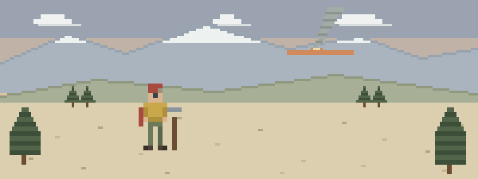

What fills the med tent
- 1400 on the line, division in the sun. Your sawyer stops making sense mid-swamp. Altered mental status is heat stroke, and it gets cooled right there with what the crew is carrying — not back at the buggy.
- Day-twelve feet. What started as a hot spot is now a raw mess that has to survive fourteen more days in the same boots. Blister and wound care is unglamorous and completely mission-relevant.
- The hike out at 8,000 feet. A twenty-year veteran goes gray on the climb, rubbing his chest and blaming the smoke. Hard work at altitude finds hearts — stop the exertion, sit him down, take it seriously.
Off-season study order
Ordered by what actually gets crews:
- Heat Illness — the fireline’s steadiest injury — the spectrum, and cool first
- Bleeding & Wounds — blister-to-boot-injury care that keeps feet in the fight
- Medical Emergencies — chest pain during hard work at altitude, and the denial that rides with it
- Patient Assessment — serial vitals on a crewmate — the trend is the truth
- Evacuation — vehicle-accessible or line evac — do that math early
Then pressure-test it
Interactive scenarios — one decision at a time, tempting mistakes included, debrief at the end:
- Cool First — heat stroke on the line, cooled there
- It’s Not Indigestion — the chest pain everyone blames on smoke
- The Guy Who’s Fine — serial vitals on the crewmate who shook it off
The certification question, honestly. “Wilderness First Aid” isn’t a regulated credential. No government body defines what a WFA card means — it means whatever the company that printed it says it means. What counts in front of a patient is whether you can do the work. This course teaches the work, free, and issues a record of completion — not a certificate, and we won’t pretend otherwise. NWCG sets the training standards for everyone on a fireline, they are not negotiable, and this course counts toward none of them. It’s for the applicant waiting on a season and the camp volunteer who wants the medicine underneath the quals. If nobody requires you to hold a card, what you need are the skills, not the laminate.
What this is
Fifteen lessons, a 40-question knowledge check, sixteen practice scenarios, a printable field reference card, and a kit checklist. Free, no account, nothing recorded about you, source on GitHub. It teaches decision-making, not hands-on skill — practice the hands-on parts on a real, padded, complaining friend.
Other far-from-help day jobs: trail crews, conservation corps & volunteer stewards · wind & solar field technicians · outdoor & adventure photographers and documentary crews